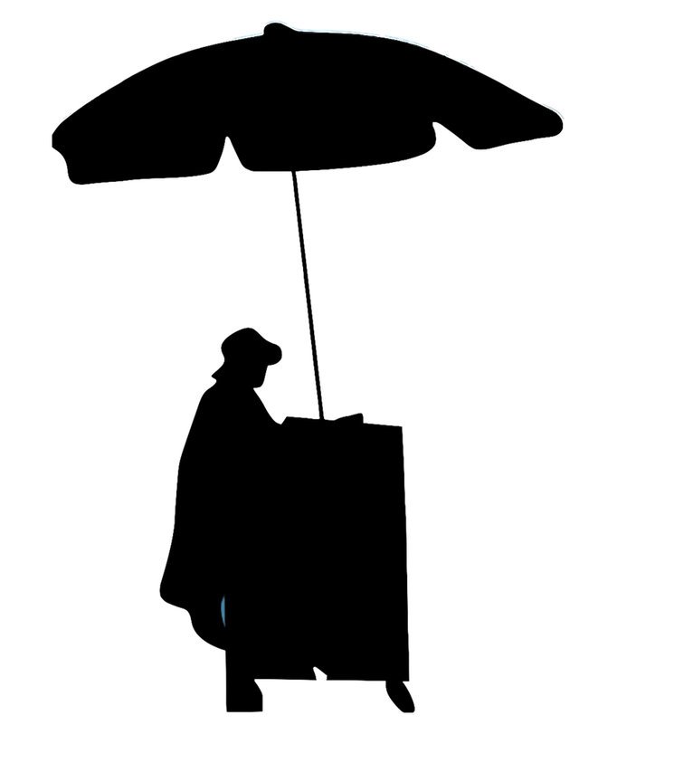

關於
七堵廟口市場美食圈以自治街為主，向七堵市場周邊延伸至崇智街、南興路，商圈內有多家的小吃攤位，這些攤位除了賣的小吃有特色外，價格更是相當便宜，像是七堵臭粿仔、咖哩麵、廟口蛋餅、雞塊麵、三明治、虱目魚等都是讓人讚不絕口的經典美食。
一大早來到七堵市場，想要填飽肚子吃個早餐，那在七堵大廟旁邊的「炸蛋餅」，是您的最佳選擇，此攤的蔥油蛋餅是許多學生的最愛，店家先放餅下鍋油炸再加蛋，您可自由選擇蛋要全熟或半生熟，金黃酥脆的蛋餅，再加上醬油和甜辣醬，一天滿滿的活力就從這攤開始。
另外七堵市場有名的美食，您絕對不能錯過名聞遐邇的「臭粿仔」，其實就跟台灣的著名小吃臭豆腐一樣，臭粿仔雖然味道聞起來令人不敢恭維，但其實吃起來相當美味，利用豬頭骨熬出來的湯是特殊味道的來源，湯頭喝起來濃郁清爽，再加上客家的粿仔條充分吸取了湯頭的精華，口感Q又滑順 ，老闆自製的辣椒醬更增添了氣味，店家的小菜也毫不馬虎，油豆腐、豬嘴肉、菜頭等都是臭粿仔最佳的配角。